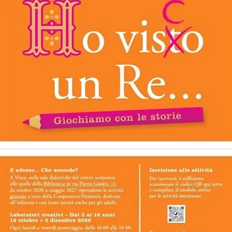

da lun 12 ott a gio 27 mag
Ho visCo un Re - Giochiamo con le storie
A Visco, nelle sale didattiche del centro scolastico alle spalle della Biblioteca in via Pietro Gioitti 11, da ottobre 2026 a maggio 2027 riprendono le attività gratuite a cura della Cooperativa Damatrà, dedicate all'infanzia e con tante novità anche per gli adulti. Laboratori…
 Indicazioni
Indicazioni
- Costi e prenotazioni
- Costo non indicato · Prenotazione non indicata
- Programma
- Programma da verificare. Apri la fonte ufficiale per orari e possibili aggiornamenti.
- In caso di maltempo
- Nessuna indicazione specifica pubblicata.
- Note
- Acquisito automaticamente dalla fonte.
L’EVENTO
Descrizione completa
A Visco, nelle sale didattiche del centro scolastico alle spalle della Biblioteca in via Pietro Gioitti 11, da ottobre 2026 a maggio 2027 riprendono le attività gratuite a cura della Cooperativa Damatrà, dedicate all'infanzia e con tante novità anche per gli adulti.
Laboratori creativi - dai 3 ai 14 anni
12 ottobre > 5 dicembre 2026
ogni lunedì e venerdì pomeriggio, dalle 16.00 alle 18.00
e i sabati 7 novembre e 5 dicembre dalle 10.00 alle 12.00
Ginnastica circense - dai 5 ai 12 anni
5 novembre 2026 > 27 maggio 2027
ogni giovedì dalle 16.00 alle 17.15, per bambine e bambini dai 5 agli 8 anni
dalle 17.30 alle 18.30, per bambine e bambini dai 9 ai 12 anni
Attività per lettori volontari - adulti
Venerdì 13 e 20 novembre 2026
Due appuntamenti, dalle 17.00 alle 18.30, dedicati a quelle e quelli che amano raccontare e leggere le storie agli altri
Per iscriversi compilare il modulo online
Per maggiori informazioni:
info@damatra.com
tel. 0432 235757
IL PROGRAMMA
Programma e orari
Appuntamenti raccolti dalle fonti elencate. Dove manca un orario, non è ancora disponibile in questa scheda.
Programma pubblicato
- Dal 2026-10-12 al 2027-05-27
INFORMAZIONI UTILI
Prima di partire
- Controllare la fonte prima di partire.
ORGANIZZAZIONE